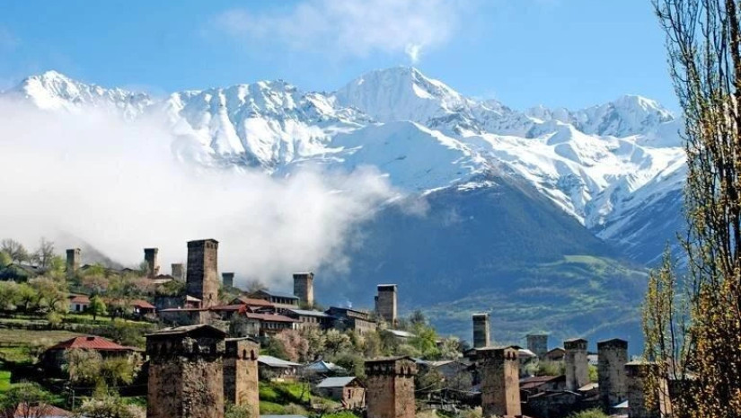
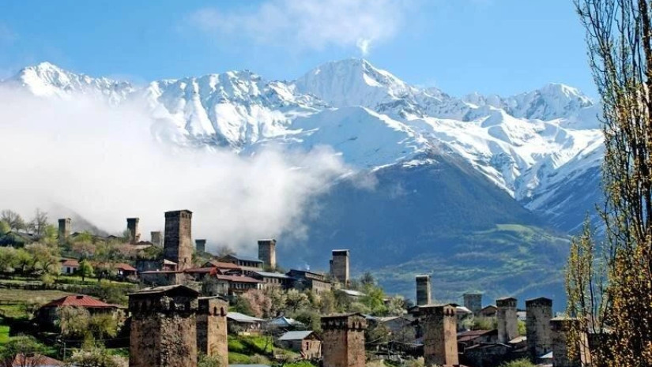
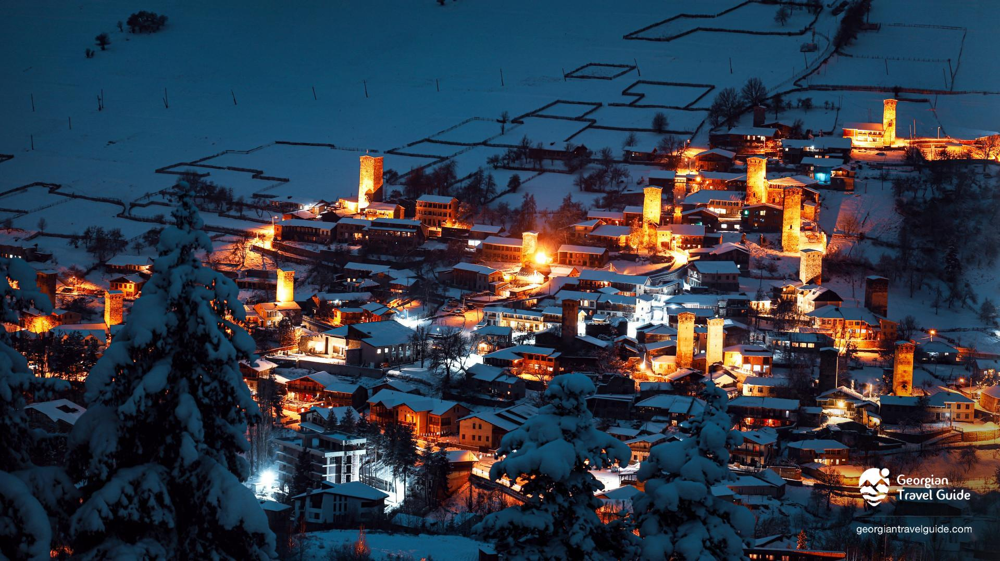
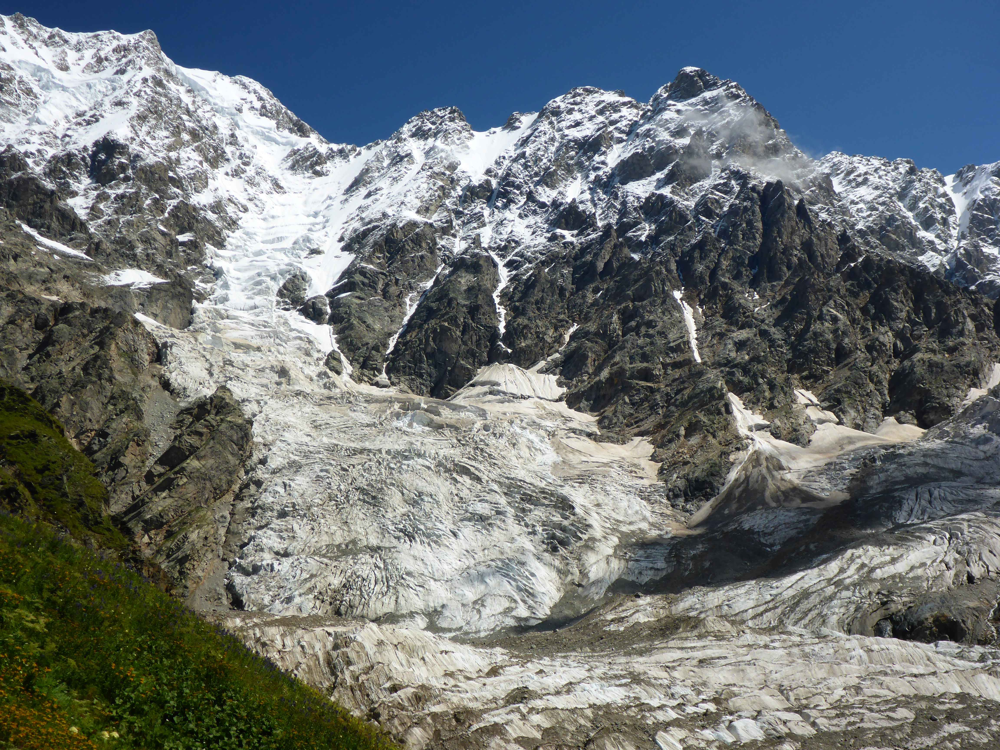
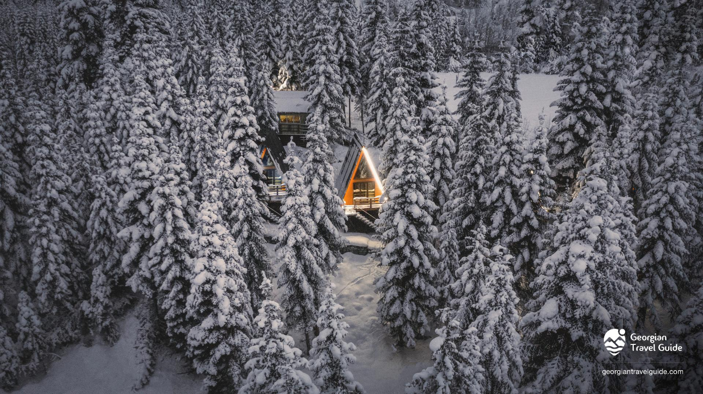
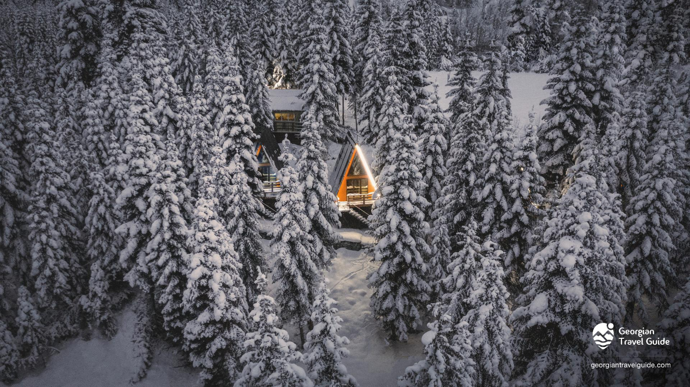
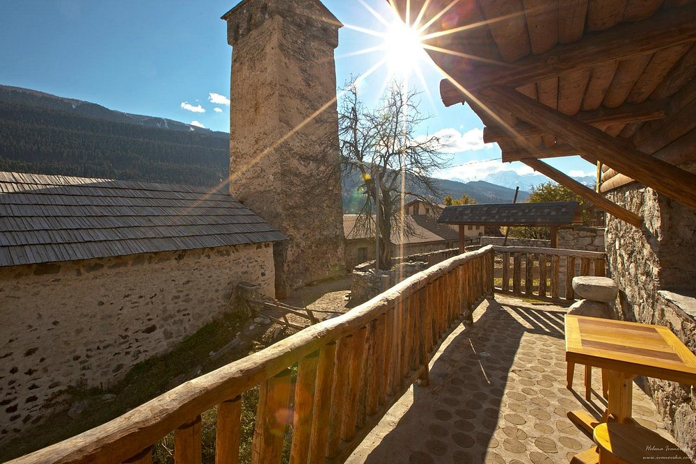
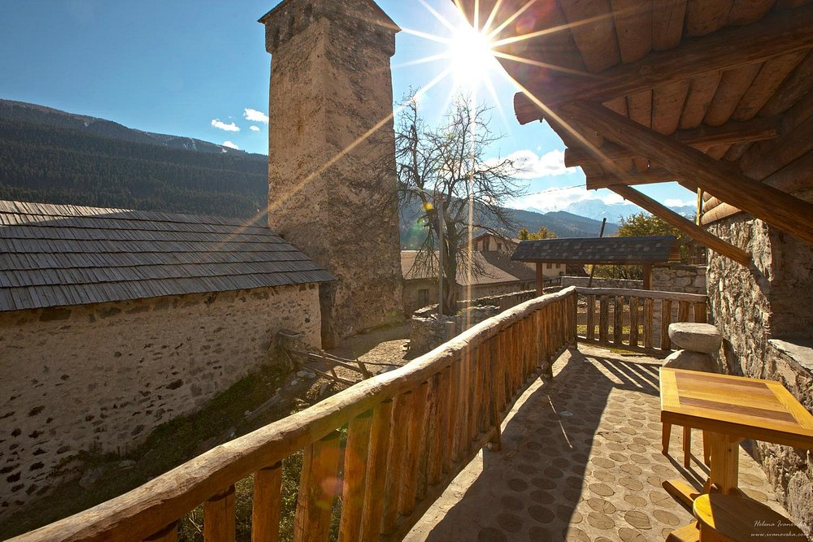

სვანეთის შესახებ
სვანეთი არის ადგილობრივი რეგიონი კავკასიონის მთებში, ცნობილი თავისი შუა საუკუნეების კოშკებით, უნიკალური სოფლებით, მდიდარი ისტორიით და საოცარი ბუნებით. ეს არის ადგილი, სადაც ტრადიციები დღემდე ცოცხალია.
ფოტო გალერეა
 

ადგილები სანახავად
უშგული
ერთ-ერთი ყველაზე მაღალმთიანი დასახლება ევროპაში. იუნესკოს მემკვიდრეობაშია.

მესტია
სვანეთის მთავარი ქალაქი. მესტიის კოშკები და მუზეუმი აუცილებლად სანახავია.
შხარა
საქართველოს უმაღლესი მთა. საოცარი ხედები და ულამაზესი ბილიკები.
სასტუმრო და რესტორანი
ბუდე - კოტეჯი სვანეთში – მესტია
ბუდე არის ულამაზესი კოტეჯები მესტიაში, სადაც თქვენ შეძლეთ დაისვენოთ ულამაზეს გარემოში წლის ნებისმიერ დროს. კოტეჯები მესტიაში, ცენტრიდან 3 კილომეტრშია, ჰაწვალის ქვედა საბაგიროსთან ახლოს , ტყეში, სრულიად იზოლირებულ ადგილას, ულამაზესი ხედებითა და მყუდრო გარემოთი. ჯამში ბუდეს აქვს 10 კოტეჯი, სადაც სტუმრობა ნებისმიერი ასაკის დამსვენებელს შეუძლია.
 


The Old House Cafe-მესტია
ქალაქის განაპირას, ამაღლებულ ადგილას მდებარეობს. შესანიშნავი სამხრეთისკენ მიმართული მზიანი ტერასა. სასტუმრო აერთიანებს ტრადიციულ სვანურ არქიტექტურას თანამედროვე დამატებებთან, რაც უზრუნველყოფს მაღალი დონის რელაქსაციას.პერსონალი მეგობრული და გულისხმიერია და განსაკუთრებული აღნიშვნა უნდა ითქვას სასიამოვნო და ძალიან პროფესიონალ ანასტასიაზე..
 
